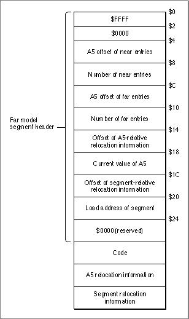

Legacy Document
Important: The information in this document is obsolete and should not be used for new development.
Important: The information in this document is obsolete and should not be used for new development.


The Far Model Segment Header Structure
Near model segments have a 4-byte header that provides the information required by the Segment Manager to transform jump table entries from their unloaded state to their loaded state. Segments linked with the-model faroption have a larger header and contain relocation information. The format of the far model segment header is shown in Figure 10-11. Following the header are the code, the A5 relocation information, and the segment relocation information.Figure 10-11 The far model segment header

The meaning of each field in Figure 10-11 is as follows.
Address Entry $0 This field determines whether the segment has been built according to the far model option. Namely, the first word of the segment header must match the version field in the jump-table flag entry, $FFFF. $2 Reserved. $4 The byte offset from A5 of the first near model jump table entry. $8 The number of near entries. $C The byte offset from A5 of the first far model jump table entry. $10 The number of far model entries. $14 The offset (from the beginning of the segment) of the relocation information for A5-relative references. A5-relocation information contains the addresses of all instructions in a segment that references far model global data or far model jump table entries. $18 The current A5 value, which is added to the offset specified in the A5-relative address field of the instruction to calculate the actual address. $1C The offset, from the beginning of the segment, of the relocation information for PC-relative references. $20 The segment load address, which is added to the offset specified in the A5-relative address field of the instruction to calculate the actual address of the entry point. $24 Reserved.